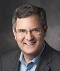

Wednesday, October 7, 11:00am
(invited talk at the SciKnow Workshop)
Dr. Mark Musen, Director of the Stanford Center for Biomedical Informatics Research; Professor of Biomedical Informatics at Stanford University.
 Thursday, October 8, 9:15am
Thursday, October 8, 9:15am
Dr. Chris Welty, Senior Research Scientist at Google Researh, New York; Endowed Professor of Cognitive Systems at the VU University, Amsterdam.
Talk: "Goodbye to True: Advancing Semantics Beyond the Black and White"
 Saturday, October 10, 9:00am
Saturday, October 10, 9:00am
Dr. Yolanda Gil, Director of Knowledge Technologies and Associate Division Director at the Information Sciences Institute of the University of Southern California; Research Professor in Computer Science.
Talk: "Linked Open Knowledge"